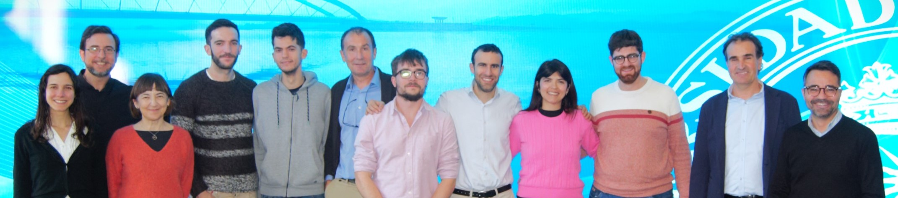

40°26′N 3°44′W · Madrid Universidad Politécnica de Madrid
Miramos al futuro analizando la huella del presente y pasado
El Grupo de Investigación Aplicaciones Geomáticas Avanzadas (AGA) de la Universidad Politécnica de Madrid estudia nuestras huellas a través de las nuevas tecnologías.
Líneas de investigación
Todos →Ingeniería civil y patrimonio
Nuevas tecnologías en la documentación y gestión del patrimonio cultural y las infraestructuras.
Ver proyectos →Sostenibilidad y biodiversidad
Técnicas geomáticas con énfasis en las temáticas de agua y medio ambiente.
Ver proyectos →Movimientos de terreno
Control de movimientos del terreno, infraestructuras y obras civiles con teledetección DInSAR.
Ver proyectos →Huella de carbono
Análisis de ciclo de vida y huella de carbono de producto y corporativa.
Ver proyectos →Cooperación y educación
Generación de conocimiento, transferencia y acción social.
Ver proyectos →Misión
AGA tiene por misión avanzar en el área de conocimiento de Ingeniería Cartográfica, Geodésica y Fotogrametría y en el área de Ingeniería del Terreno.

Proyectos recientes
Todos →Análisis de ciclo de vida y huella de carbono
Huella de carbono de producto y corporativa.
Control de movimientos del terreno con teledetección DInSAR
Monitorización de movimientos del terreno, infraestructuras y obras civiles con interferometría radar.
Modelización 3D en ingeniería inversa y patrimonio cultural
Servicio científico-tecnológico de documentación 3D de patrimonio e infraestructuras mediante escaneado y fotogrametría.
Observatorio de Acción Climática
Plataforma de seguimiento de la acción climática.
CAB Centroamérica
Programa de Cooperación Comunidad, Agua y Bosques en Centroamérica.
Curso abierto: 3D Scanning and Modeling
Curso en abierto (OCW UPM).
Equipo
Ver personas →Investigadores
- SÁ
Sergio Álvarez Gallego
Investigadores
- MF
Mercedes Farjas Abadía
Investigadores
- JF
Jacobo Ferrer Hernández
Investigadores
- MG
Miguel García Gómez
Investigadores
- MM
Miguel Marchamalo Sacristán
Investigadores
- SM
Sara Martínez Delgado
Investigadores
- RM
Rubén Martínez Marín
Investigadores
- CM
Carlos Morillas López
Investigadores
- JO
Juan Carlos Ojeda Manrique
Investigadores
- JR
Juan Gregorio Rejas Ayuga
Investigadores
- JR
Javier Rodríguez Saiz
Investigadores
- JS
José Antonio Sánchez Sobrino
Investigadores
Colaboradores
- FC
Francisco Darío Cabrera Torres
Colaboradores
- RC
Rafael Corrales Andino
Colaboradores
- AF
Alfredo Fernández Landa
Colaboradores
- CG
Carlos García Lanchares
Colaboradores
- HM
Hicham Moussebbi
Colaboradores
- NR
Nohemy Ribera Gutiérrez
Colaboradores
- NR
Ney Rios
Colaboradores
- JS
Jaime Sánchez Fernández
Colaboradores
- CS
Candela Sancho
Colaboradores
- JT
José Francisco (Pepe) Traub
Colaboradores
- MU
Miguel Ureña
Colaboradores
- MV
Mara Vallejos Mihotek
Colaboradores